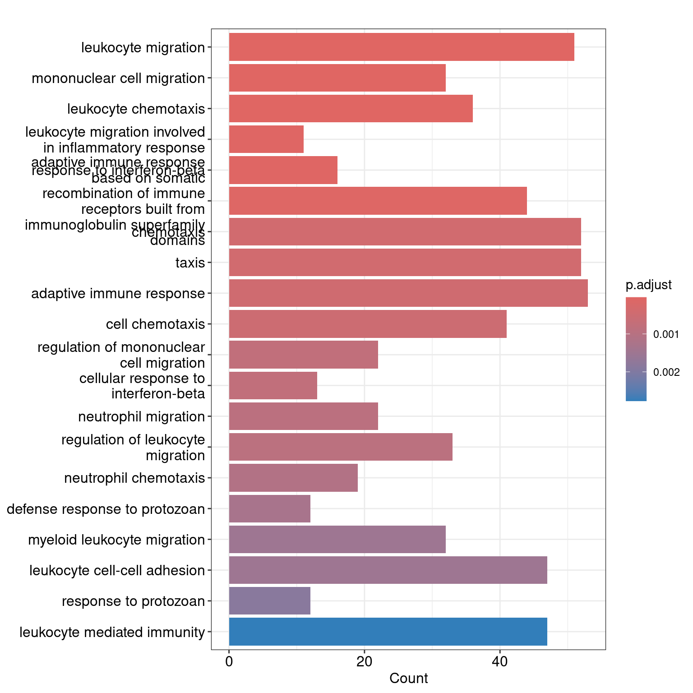
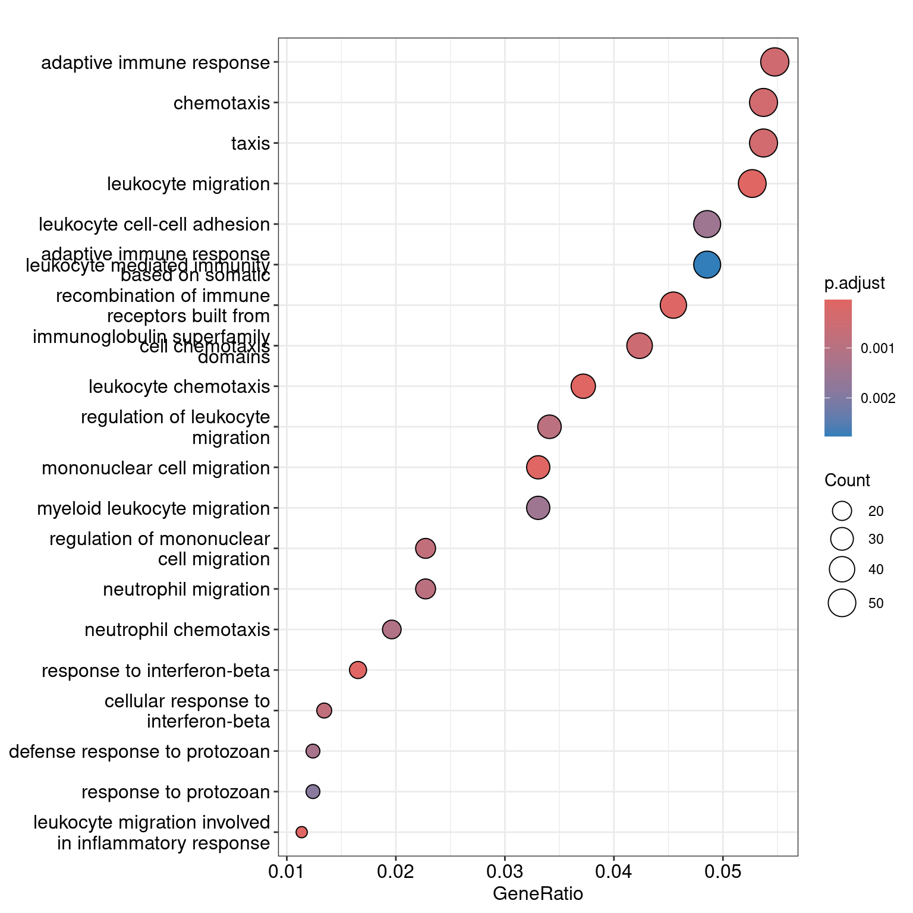

library(here)
library(tidyverse)
library(SummarizedExperiment)
library(DESeq2)
library(clusterProfiler)
library(enrichplot)
library(org.Mm.eg.db)
library(universalmotif)
set.seed(123) # for reproducibility2 Gene set enrichment analyses
Gene set enrichment analyses are commonly used to identify overrepresented terms (mostly functional categories, but also sequence motifs and other sets) among a particular set of terms. For instance, researchers typically want to find if a list of differentially expressed genes (DEGs) is overrepresented in genes related to a specific pathway. To do that, we use statistical methods to calculate the probability of finding the frequency of terms we found by chance (under the null hypothesis). Although simple, (correctly) performing enrichment analyses requires special attention to avoid common mistakes and pitfalls.
2.1 Goals of this lesson
In this lesson, you will learn to:
- perform enrichment analyses for functional terms among differentially expressed genes;
- perform enrichment analyses for sequence motifs among a set of promoter sequences.
We will start by loading the required packages.
2.2 Enrichment for functional terms
To start, we will load an RNA-seq data set stored as a SummarizedExperiment object in data/GSE96870_se.rds. Data were obtained from Blackmore et al. (2017) and modified to keep only a subset of the samples. In this experiment, researchers were trying to investigate how gene expression changes in male and female mice 4 and 8 days after infection with Influenza A. Samples were extracted from spinal cord and cerebellum tissues, but here we will only cerebellum samples only.
Let’s load the SummarizedExperiment object and take a look at it.
# Load data
se <- readRDS(here("data", "GSE96870_se.rds"))
# Inspect data
## Entire object
seclass: RangedSummarizedExperiment
dim: 41786 22
metadata(0):
assays(1): counts
rownames(41786): Xkr4 LOC105243853 ... TrnT TrnP
rowData names(3): ENTREZID product gbkey
colnames(22): GSM2545337 GSM2545338 ... GSM2545346 GSM2545347
colData names(12): title geo_accession ... Label Group## Count matrix
assay(se) |> head() GSM2545337 GSM2545338 GSM2545348 GSM2545353 GSM2545343 GSM2545349
Xkr4 2410 2159 2275 1910 2235 1881
LOC105243853 0 1 1 0 3 0
LOC105242387 121 110 161 214 130 154
LOC105242467 5 5 2 1 2 4
Rp1 2 0 3 1 1 6
Sox17 239 218 302 322 296 286
GSM2545354 GSM2545339 GSM2545344 GSM2545352 GSM2545362 GSM2545340
Xkr4 1771 1980 1779 1890 2315 1977
LOC105243853 0 4 3 1 1 0
LOC105242387 124 120 131 272 189 172
LOC105242467 4 5 2 3 2 2
Rp1 3 3 1 5 3 2
Sox17 273 220 233 267 197 261
GSM2545345 GSM2545350 GSM2545363 GSM2545336 GSM2545342 GSM2545351
Xkr4 1528 2584 1645 1891 1757 1837
LOC105243853 0 0 0 0 1 1
LOC105242387 160 124 223 204 177 221
LOC105242467 2 7 1 12 3 1
Rp1 2 5 1 2 3 3
Sox17 271 325 310 251 179 201
GSM2545380 GSM2545341 GSM2545346 GSM2545347
Xkr4 1723 1945 1644 1585
LOC105243853 1 0 1 3
LOC105242387 251 173 180 176
LOC105242467 4 6 1 2
Rp1 0 1 2 2
Sox17 246 232 205 230## Sample metadata
colData(se)DataFrame with 22 rows and 12 columns
title geo_accession organism age sex
<character> <character> <character> <character> <character>
GSM2545337 CNS_RNA-seq_11C GSM2545337 Mus musculus 8 weeks Female
GSM2545338 CNS_RNA-seq_12C GSM2545338 Mus musculus 8 weeks Female
GSM2545348 CNS_RNA-seq_27C GSM2545348 Mus musculus 8 weeks Female
GSM2545353 CNS_RNA-seq_3C GSM2545353 Mus musculus 8 weeks Female
GSM2545343 CNS_RNA-seq_20C GSM2545343 Mus musculus 8 weeks Male
... ... ... ... ... ...
GSM2545351 CNS_RNA-seq_2C GSM2545351 Mus musculus 8 weeks Female
GSM2545380 CNS_RNA-seq_9C GSM2545380 Mus musculus 8 weeks Female
GSM2545341 CNS_RNA-seq_17C GSM2545341 Mus musculus 8 weeks Male
GSM2545346 CNS_RNA-seq_25C GSM2545346 Mus musculus 8 weeks Male
GSM2545347 CNS_RNA-seq_26C GSM2545347 Mus musculus 8 weeks Male
infection strain time tissue mouse
<character> <character> <character> <character> <integer>
GSM2545337 NonInfected C57BL/6 Day0 Cerebellum 9
GSM2545338 NonInfected C57BL/6 Day0 Cerebellum 10
GSM2545348 NonInfected C57BL/6 Day0 Cerebellum 8
GSM2545353 NonInfected C57BL/6 Day0 Cerebellum 4
GSM2545343 NonInfected C57BL/6 Day0 Cerebellum 11
... ... ... ... ... ...
GSM2545351 InfluenzaA C57BL/6 Day8 Cerebellum 16
GSM2545380 InfluenzaA C57BL/6 Day8 Cerebellum 19
GSM2545341 InfluenzaA C57BL/6 Day8 Cerebellum 6
GSM2545346 InfluenzaA C57BL/6 Day8 Cerebellum 23
GSM2545347 InfluenzaA C57BL/6 Day8 Cerebellum 24
Label Group
<factor> <factor>
GSM2545337 Female_Day0_9 Female_Day0
GSM2545338 Female_Day0_10 Female_Day0
GSM2545348 Female_Day0_8 Female_Day0
GSM2545353 Female_Day0_4 Female_Day0
GSM2545343 Male_Day0_11 Male_Day0
... ... ...
GSM2545351 Female_Day8_16 Female_Day8
GSM2545380 Female_Day8_19 Female_Day8
GSM2545341 Male_Day8_6 Male_Day8
GSM2545346 Male_Day8_23 Male_Day8
GSM2545347 Male_Day8_24 Male_Day8 Now, we will identify genes that are differentially expressed on day 8 after infection compared to day 0 (control).
# Keep only protein-coding genes
se <- se[rowData(se)$gbkey == "mRNA"]
# Get gene-wise differential expression test statistics (design: sex + time)
dds <- DESeqDataSet(se, design = ~ sex + time)
dds <- DESeq(dds)
# Obtain results from the desired contrast: day 8 vs day 0
res <- results(dds, contrast = c("time", "Day8", "Day0"))
# Get differentially expressed genes (DEGs) in a character vector
deg <- res |>
as.data.frame() |>
filter(padj <0.05, abs(log2FoldChange) > log2(1.5)) |>
tibble::rownames_to_column("gene") |>
pull(gene)
head(deg)[1] "3110035E14Rik" "Sgk3" "Kcnb2" "Sbspon"
[5] "Gsta3" "Lman2l" Next, we will try find out if this set of DEGs is overrepresented in genes associated with a particular Gene Ontology (GO) term. For that, we will GO annotation in the OrgDb package for mouse. Bioconductor provides so-called OrgDb packages with annotation data for a bunch of model organisms, and many packages (including clusterProfiler, which we will use to perform overrepresentation analysis) can use OrgDb packages to easily and automatically retrieve data.
# Perform ORA for GO terms
ora_go <- enrichGO(
gene = deg,
keyType = "SYMBOL",
ont = "BP",
OrgDb = org.Mm.eg.db
)
# Explore results as a data frame
as.data.frame(ora_go) |> head() ID Description GeneRatio BgRatio
GO:0050900 GO:0050900 leukocyte migration 51/968 402/28905
GO:0006935 GO:0006935 chemotaxis 52/968 465/28905
GO:0042330 GO:0042330 taxis 52/968 467/28905
GO:0030595 GO:0030595 leukocyte chemotaxis 36/968 242/28905
GO:0071674 GO:0071674 mononuclear cell migration 32/968 203/28905
GO:0060326 GO:0060326 cell chemotaxis 41/968 334/28905
pvalue p.adjust qvalue
GO:0050900 3.536123e-16 1.795643e-12 1.304643e-12
GO:0006935 3.336947e-14 6.712316e-11 4.876903e-11
GO:0042330 3.965528e-14 6.712316e-11 4.876903e-11
GO:0030595 6.591196e-14 8.367524e-11 6.079511e-11
GO:0071674 3.208410e-13 3.258461e-10 2.367469e-10
GO:0060326 8.641191e-13 7.313328e-10 5.313575e-10
geneID
GO:0050900 Tnfsf18/Sell/Slamf9/Fut7/Itga4/Mdk/Grem1/Ada/Prex1/Edn3/P2ry12/Il12a/S100a8/S100a9/Nbl1/Padi2/Bst1/Cxcl5/Ppbp/Pf4/Cxcl1/Ptn/Alox5/Trpm4/Hsd3b7/Itgam/Adam8/Ascl2/Calr/Ccl17/Enpp1/Aire/Ccl2/Ccl7/Ccl5/Ccl6/Ccr7/Aoc3/Itgb3/Ccl28/Lgals3/Ptk2b/Emp2/Apod/Retnlg/Plg/Fpr2/Dusp1/Ager/Il33/Ch25h
GO:0006935 Tnfsf18/Sell/Slamf9/Mdk/Grem1/Prex1/Edn3/P2ry12/Il12a/S100a8/S100a9/Lpar1/Nbl1/Padi2/Bst1/Cxcl5/Ppbp/Pf4/Cxcl1/Ptn/Alox5/Ntf3/Trpm4/Hsd3b7/Itgam/Adam8/Lsp1/Calr/Ccl17/Robo3/Cmtm7/Ccl2/Ccl7/Ccl5/Ccl6/Ccr7/Itgb3/Tubb2b/Ccl28/Lgals3/Cmtm5/Ptk2b/Nr4a1/Casr/Retnlg/Fpr2/Dusp1/Ager/Stx3/Ch25h/Plxnb3/Nox1
GO:0042330 Tnfsf18/Sell/Slamf9/Mdk/Grem1/Prex1/Edn3/P2ry12/Il12a/S100a8/S100a9/Lpar1/Nbl1/Padi2/Bst1/Cxcl5/Ppbp/Pf4/Cxcl1/Ptn/Alox5/Ntf3/Trpm4/Hsd3b7/Itgam/Adam8/Lsp1/Calr/Ccl17/Robo3/Cmtm7/Ccl2/Ccl7/Ccl5/Ccl6/Ccr7/Itgb3/Tubb2b/Ccl28/Lgals3/Cmtm5/Ptk2b/Nr4a1/Casr/Retnlg/Fpr2/Dusp1/Ager/Stx3/Ch25h/Plxnb3/Nox1
GO:0030595 Tnfsf18/Sell/Slamf9/Mdk/Grem1/Prex1/Edn3/Il12a/S100a8/S100a9/Nbl1/Padi2/Bst1/Cxcl5/Ppbp/Pf4/Cxcl1/Ptn/Alox5/Trpm4/Hsd3b7/Itgam/Adam8/Calr/Ccl17/Ccl2/Ccl7/Ccl5/Ccl6/Ccr7/Lgals3/Ptk2b/Retnlg/Fpr2/Dusp1/Ch25h
GO:0071674 Tnfsf18/Slamf9/Fut7/Itga4/Mdk/Grem1/Il12a/Nbl1/Padi2/Alox5/Trpm4/Hsd3b7/Adam8/Ascl2/Calr/Ccl17/Aire/Ccl2/Ccl7/Ccl5/Ccl6/Ccr7/Itgb3/Lgals3/Ptk2b/Apod/Retnlg/Plg/Fpr2/Dusp1/Ager/Ch25h
GO:0060326 Tnfsf18/Sell/Slamf9/Mdk/Grem1/Prex1/Edn3/Il12a/S100a8/S100a9/Lpar1/Nbl1/Padi2/Bst1/Cxcl5/Ppbp/Pf4/Cxcl1/Ptn/Alox5/Trpm4/Hsd3b7/Itgam/Adam8/Calr/Ccl17/Ccl2/Ccl7/Ccl5/Ccl6/Ccr7/Ccl28/Lgals3/Ptk2b/Nr4a1/Retnlg/Fpr2/Dusp1/Ch25h/Plxnb3/Nox1
Count
GO:0050900 51
GO:0006935 52
GO:0042330 52
GO:0030595 36
GO:0071674 32
GO:0060326 41
Overrepresentation analyses with non-model organisms
If you’re working with a non-model organism for which an OrgDb package is not available, you can create a 2-column data frame with functional annotation in the first column and gene IDs in the second column. Then, you can pass this annotation data frame to the enricher() function in clusterProfiler, which is more flexible and does not expect OrgDb objects as input.
As you can see, the enrichGO() function returned GO terms that are significantly overrepresented in our set of DEGs. However, there is an important issue with the way we performed the enrichment analysis: enrichGO() used all genes in the mouse genome as background (or ‘universe’). This does not make sense, because we didn’t use all genes for our differential expression analysis (e.g., we removed non-protein-coding genes). Choosing the right universe is very important, because a larger universe leads to more false positives (see an example here).
Now, let’s perform the enrichment analysis again, but this time restricting our universe to only those genes in the expression matrix.
# Perform ORA for GO terms with restricted universe
ora_go2 <- enrichGO(
gene = deg,
keyType = "SYMBOL",
ont = "BP",
universe = rownames(se),
OrgDb = org.Mm.eg.db
)
# Explore results as a data frame
as.data.frame(ora_go2) |> head() ID
GO:0050900 GO:0050900
GO:0071674 GO:0071674
GO:0030595 GO:0030595
GO:0002523 GO:0002523
GO:0035456 GO:0035456
GO:0002460 GO:0002460
Description
GO:0050900 leukocyte migration
GO:0071674 mononuclear cell migration
GO:0030595 leukocyte chemotaxis
GO:0002523 leukocyte migration involved in inflammatory response
GO:0035456 response to interferon-beta
GO:0002460 adaptive immune response based on somatic recombination of immune receptors built from immunoglobulin superfamily domains
GeneRatio BgRatio pvalue p.adjust qvalue
GO:0050900 51/968 372/16569 1.116320e-08 3.694287e-05 3.332087e-05
GO:0071674 32/968 180/16569 1.468901e-08 3.694287e-05 3.332087e-05
GO:0030595 36/968 222/16569 2.301099e-08 3.858177e-05 3.479908e-05
GO:0002523 11/968 25/16569 5.344683e-08 5.632460e-05 5.080235e-05
GO:0035456 16/968 55/16569 5.598867e-08 5.632460e-05 5.080235e-05
GO:0002460 44/968 320/16569 1.044964e-07 8.760284e-05 7.901396e-05
geneID
GO:0050900 Tnfsf18/Sell/Slamf9/Fut7/Itga4/Mdk/Grem1/Ada/Prex1/Edn3/P2ry12/Il12a/S100a8/S100a9/Nbl1/Padi2/Bst1/Cxcl5/Ppbp/Pf4/Cxcl1/Ptn/Alox5/Trpm4/Hsd3b7/Itgam/Adam8/Ascl2/Calr/Ccl17/Enpp1/Aire/Ccl2/Ccl7/Ccl5/Ccl6/Ccr7/Aoc3/Itgb3/Ccl28/Lgals3/Ptk2b/Emp2/Apod/Retnlg/Plg/Fpr2/Dusp1/Ager/Il33/Ch25h
GO:0071674 Tnfsf18/Slamf9/Fut7/Itga4/Mdk/Grem1/Il12a/Nbl1/Padi2/Alox5/Trpm4/Hsd3b7/Adam8/Ascl2/Calr/Ccl17/Aire/Ccl2/Ccl7/Ccl5/Ccl6/Ccr7/Itgb3/Lgals3/Ptk2b/Apod/Retnlg/Plg/Fpr2/Dusp1/Ager/Ch25h
GO:0030595 Tnfsf18/Sell/Slamf9/Mdk/Grem1/Prex1/Edn3/Il12a/S100a8/S100a9/Nbl1/Padi2/Bst1/Cxcl5/Ppbp/Pf4/Cxcl1/Ptn/Alox5/Trpm4/Hsd3b7/Itgam/Adam8/Calr/Ccl17/Ccl2/Ccl7/Ccl5/Ccl6/Ccr7/Lgals3/Ptk2b/Retnlg/Fpr2/Dusp1/Ch25h
GO:0002523 Fut7/Mdk/S100a8/S100a9/Ppbp/Ptn/Alox5/Itgam/Adam8/Ccl2/Aoc3
GO:0035456 Aim2/Ifi204/Gbp6/Oas1c/Ifitm6/Bst2/Irgm1/Tgtp1/Tgtp2/Ifi47/Igtp/Irgm2/Ifitm7/F830016B08Rik/Iigp1/Ifit1
GO:0002460 Il18rap/Pla2g4a/Tnfsf18/Fcgr4/Cd46/Fut7/C8g/Ada/Il12a/Rorc/Masp2/Fosl2/Pf4/Clec7a/Pirb/Trpm4/Irf7/Ascl2/Tnfsf13b/Il12rb1/Parp3/Enpp1/Aire/Icosl/Ccr7/Gzmb/Csf2rb/Il2rb/Tnfrsf13c/Emp2/Klhl6/Tfrc/H2-K1/Tap2/Ager/C4b/H2-Q1/H2-Q2/H2-Q6/H2-T23/Cd70/C3/Cd274/Il33
Count
GO:0050900 51
GO:0071674 32
GO:0030595 36
GO:0002523 11
GO:0035456 16
GO:0002460 44Finally, you can also visually explore enrichment results as follows:
# Barplot
barplot(ora_go2, showCategory = 20)
# Dotplot
dotplot(ora_go2, showCategory = 20)
Although common, these visualization approaches are problematic because (i) they only show the top N (often 20) terms, when most of the time there are hundreds of enriched terms, and (ii) the GO database contains a lot of redundant terms, so many of the bars or dots in these plots actually represent the same thing. The best visualization technique for overrepresentation analysis is no visualization at all. Manually looking at the table and summarizing results in text is a much better thing to do.
2.3 Enrichment for sequence motifs
Enrichment analyses can also be used to find overrepresented sequence motifs among a set of sequences. For example, you may have a set of coexpressed genes and want to find out if a particular sequence motif is overrepresented in their promoter sequences (which would likely indicate transcription factor binding sites). There are many software tools for such kind of analysis, such as the MEME suite (Bailey et al. 2015) and the R/Bioconductor package universalmotif (Tremblay 2024).
Here, we will use universalmotif to find out if an example motif (stored in the example data set ArabidopsisMotif) is significantly overrepresented in promoters of 50 genes in the genome of Arabidopsis thaliana. Let’s first load the example data and take a quick look at them.
# Load example data: promoters and motifs of Arabidopsis thaliana
data("ArabidopsisMotif")
data("ArabidopsisPromoters")
# Inspect data
ArabidopsisMotif
Motif name: YTTTYTTTTTYTTTY
Alphabet: DNA
Type: PPM
Strands: +-
Total IC: 15.99
Pseudocount: 1
Consensus: YTYTYTTYTTYTTTY
Target sites: 617
E-value: 2.5e-87
Y T Y T Y T T Y T T Y T T T Y
A 0.01 0.00 0.00 0.00 0.00 0.06 0.00 0.01 0.00 0.00 0.02 0.00 0.00 0.00 0.00
C 0.30 0.17 0.31 0.01 0.54 0.02 0.24 0.25 0.22 0.04 0.39 0.21 0.16 0.18 0.43
G 0.16 0.05 0.03 0.01 0.00 0.02 0.11 0.00 0.04 0.05 0.03 0.01 0.02 0.00 0.11
T 0.53 0.78 0.66 0.98 0.45 0.90 0.66 0.74 0.74 0.91 0.55 0.77 0.83 0.82 0.46ArabidopsisPromotersDNAStringSet object of length 50:
width seq names
[1] 1000 CATACAAGTAACAGAAAAACCGA...ACACTTTTGTCCGAAAACTAAG AT4G28150
[2] 1000 TCGCTCATAGTTCTCCTAGATCG...AAATCCCAGTATTACCAACTTC AT1G19380
[3] 1000 AATTGAAGGCTTTTACATCTTGG...TTGAAAGTCTTCAAGCAGACGC AT4G19520
[4] 1000 TCGTAAAGTTAAAGGGAGACGTC...TTTAATAATCACATCTCTTACC AT1G03850
[5] 1000 TACTTTTATGGATCATCATCAGA...TGTGTAATGACGATGAAAGATG AT5G01810
... ... ...
[46] 1000 ACAGCAAAAACTGAGGTGCGAAC...CAGAGAGGACTGAGGAAATTCA AT5G22690
[47] 1000 GAATTGTGATACTATACTAATTG...GCCGTGCCCTTCATTTTCAGAA AT1G05670
[48] 1000 CATGCTTGGTTGGTTCTTCTTGT...AAACTTAGTGCCACTTAGACAC AT1G06160
[49] 1000 AGTTTATTGAATTAAGTTTTTAG...TAAGGAACGTTCAAGAACCAAA AT5G24660
[50] 1000 AGCGGTATATAAAAGTTAGTGCT...AGGATGTTGATGCATGAAAATC AT3G19200Now, to perform an enrichment analysis, we will use the enrich_motifs() function.
# Perform motif enrichment analysis
enrich_motifs(
motifs = ArabidopsisMotif,
sequences = ArabidopsisPromoters,
shuffle.k = 3,
threshold = 0.001,
RC = TRUE
)DataFrame with 1 row and 15 columns
motif motif.i motif.consensus target.hits target.seq.hits
<character> <integer> <character> <integer> <integer>
1 YTTTYTTTTTYTTTY 1 YTYTYTTYTTYTTTY 244 50
target.seq.count bkg.hits bkg.seq.hits bkg.seq.count Pval Qval
<integer> <integer> <integer> <integer> <numeric> <numeric>
1 50 135 45 50 1.23587e-08 1.23587e-08
Eval pct.target.seq.hits pct.bkg.seq.hits target.enrichment
<numeric> <numeric> <numeric> <numeric>
1 2.47174e-08 100 90 1.11111In principle, this analysis is very similar to what we’ve done for functional terms in the previous section: we are testing if input motifs are significantly overrepresented (or enriched) in a set of target sequences relative to a set of background sequences. Like in functional enrichment analyses, it’s important to carefully choose a suitable background (or universe). For instance, if you want to find overrepresented motifs in a set of coexpressed genes, you might want to use as background only promoters of expressed genes. When a background is not explicitly given, enrich_motifs() shuffles the input sequences to create a background.
Session information
This document was created under the following conditions:
─ Session info ───────────────────────────────────────────────────────────────
setting value
version R version 4.4.1 (2024-06-14)
os Ubuntu 22.04.4 LTS
system x86_64, linux-gnu
ui X11
language (EN)
collate en_US.UTF-8
ctype en_US.UTF-8
tz Arctic/Longyearbyen
date 2025-03-12
pandoc 3.2 @ /usr/lib/rstudio/resources/app/bin/quarto/bin/tools/x86_64/ (via rmarkdown)
─ Packages ───────────────────────────────────────────────────────────────────
package * version date (UTC) lib source
abind 1.4-5 2016-07-21 [1] CRAN (R 4.4.1)
AnnotationDbi * 1.66.0 2024-05-01 [1] Bioconductor 3.19 (R 4.4.1)
ape 5.8 2024-04-11 [1] CRAN (R 4.4.1)
aplot 0.2.3 2024-06-17 [1] CRAN (R 4.4.1)
Biobase * 2.64.0 2024-04-30 [1] Bioconductor 3.19 (R 4.4.1)
BiocGenerics * 0.50.0 2024-04-30 [1] Bioconductor 3.19 (R 4.4.1)
BiocManager 1.30.23 2024-05-04 [1] CRAN (R 4.4.1)
BiocParallel 1.38.0 2024-04-30 [1] Bioconductor 3.19 (R 4.4.1)
BiocStyle 2.32.1 2024-06-16 [1] Bioconductor 3.19 (R 4.4.1)
Biostrings 2.72.1 2024-06-02 [1] Bioconductor 3.19 (R 4.4.1)
bit 4.0.5 2022-11-15 [1] CRAN (R 4.4.1)
bit64 4.0.5 2020-08-30 [1] CRAN (R 4.4.1)
blob 1.2.4 2023-03-17 [1] CRAN (R 4.4.1)
cachem 1.1.0 2024-05-16 [1] CRAN (R 4.4.1)
cli 3.6.3 2024-06-21 [1] CRAN (R 4.4.1)
clusterProfiler * 4.12.1 2024-07-21 [1] Bioconductor 3.19 (R 4.4.1)
codetools 0.2-20 2024-03-31 [1] CRAN (R 4.4.1)
colorspace 2.1-0 2023-01-23 [1] CRAN (R 4.4.1)
cowplot 1.1.3 2024-01-22 [1] CRAN (R 4.4.1)
crayon 1.5.3 2024-06-20 [1] CRAN (R 4.4.1)
data.table 1.15.4 2024-03-30 [1] CRAN (R 4.4.1)
DBI 1.2.3 2024-06-02 [1] CRAN (R 4.4.1)
DelayedArray 0.30.1 2024-05-07 [1] Bioconductor 3.19 (R 4.4.1)
DESeq2 * 1.44.0 2024-04-30 [1] Bioconductor 3.19 (R 4.4.1)
digest 0.6.36 2024-06-23 [1] CRAN (R 4.4.1)
DOSE 3.30.2 2024-07-21 [1] Bioconductor 3.19 (R 4.4.1)
dplyr * 1.1.4 2023-11-17 [1] CRAN (R 4.4.1)
enrichplot * 1.24.2 2024-07-21 [1] Bioconductor 3.19 (R 4.4.1)
evaluate 0.24.0 2024-06-10 [1] CRAN (R 4.4.1)
fansi 1.0.6 2023-12-08 [1] CRAN (R 4.4.1)
farver 2.1.2 2024-05-13 [1] CRAN (R 4.4.1)
fastmap 1.2.0 2024-05-15 [1] CRAN (R 4.4.1)
fastmatch 1.1-4 2023-08-18 [1] CRAN (R 4.4.1)
fgsea 1.30.0 2024-04-30 [1] Bioconductor 3.19 (R 4.4.1)
forcats * 1.0.0 2023-01-29 [1] CRAN (R 4.4.1)
fs 1.6.4 2024-04-25 [1] CRAN (R 4.4.1)
generics 0.1.3 2022-07-05 [1] CRAN (R 4.4.1)
GenomeInfoDb * 1.40.1 2024-05-24 [1] Bioconductor 3.19 (R 4.4.1)
GenomeInfoDbData 1.2.12 2024-07-24 [1] Bioconductor
GenomicRanges * 1.56.1 2024-06-12 [1] Bioconductor 3.19 (R 4.4.1)
ggforce 0.4.2 2024-02-19 [1] CRAN (R 4.4.1)
ggfun 0.1.5 2024-05-28 [1] CRAN (R 4.4.1)
ggplot2 * 3.5.1 2024-04-23 [1] CRAN (R 4.4.1)
ggplotify 0.1.2 2023-08-09 [1] CRAN (R 4.4.1)
ggraph 2.2.1 2024-03-07 [1] CRAN (R 4.4.1)
ggrepel 0.9.5 2024-01-10 [1] CRAN (R 4.4.1)
ggtree 3.12.0 2024-04-30 [1] Bioconductor 3.19 (R 4.4.1)
glue 1.7.0 2024-01-09 [1] CRAN (R 4.4.1)
GO.db 3.19.1 2024-07-24 [1] Bioconductor
GOSemSim 2.30.0 2024-04-30 [1] Bioconductor 3.19 (R 4.4.1)
graphlayouts 1.1.1 2024-03-09 [1] CRAN (R 4.4.1)
gridExtra 2.3 2017-09-09 [1] CRAN (R 4.4.1)
gridGraphics 0.5-1 2020-12-13 [1] CRAN (R 4.4.1)
gson 0.1.0 2023-03-07 [1] CRAN (R 4.4.1)
gtable 0.3.5 2024-04-22 [1] CRAN (R 4.4.1)
HDO.db 0.99.1 2024-07-24 [1] Bioconductor
here * 1.0.1 2020-12-13 [1] CRAN (R 4.4.1)
hms 1.1.3 2023-03-21 [1] CRAN (R 4.4.1)
htmltools 0.5.8.1 2024-04-04 [1] CRAN (R 4.4.1)
htmlwidgets 1.6.4 2023-12-06 [1] CRAN (R 4.4.1)
httr 1.4.7 2023-08-15 [1] CRAN (R 4.4.1)
igraph 2.0.3 2024-03-13 [1] CRAN (R 4.4.1)
IRanges * 2.38.1 2024-07-03 [1] Bioconductor 3.19 (R 4.4.1)
jsonlite 1.8.8 2023-12-04 [1] CRAN (R 4.4.1)
KEGGREST 1.44.1 2024-06-19 [1] Bioconductor 3.19 (R 4.4.1)
knitr 1.48 2024-07-07 [1] CRAN (R 4.4.1)
labeling 0.4.3 2023-08-29 [1] CRAN (R 4.4.1)
lattice 0.22-6 2024-03-20 [1] CRAN (R 4.4.1)
lazyeval 0.2.2 2019-03-15 [1] CRAN (R 4.4.1)
lifecycle 1.0.4 2023-11-07 [1] CRAN (R 4.4.1)
locfit 1.5-9.10 2024-06-24 [1] CRAN (R 4.4.1)
lubridate * 1.9.3 2023-09-27 [1] CRAN (R 4.4.1)
magrittr 2.0.3 2022-03-30 [1] CRAN (R 4.4.1)
MASS 7.3-61 2024-06-13 [1] CRAN (R 4.4.1)
Matrix 1.7-0 2024-04-26 [1] CRAN (R 4.4.1)
MatrixGenerics * 1.16.0 2024-04-30 [1] Bioconductor 3.19 (R 4.4.1)
matrixStats * 1.3.0 2024-04-11 [1] CRAN (R 4.4.1)
memoise 2.0.1 2021-11-26 [1] CRAN (R 4.4.1)
munsell 0.5.1 2024-04-01 [1] CRAN (R 4.4.1)
nlme 3.1-165 2024-06-06 [1] CRAN (R 4.4.1)
org.Mm.eg.db * 3.19.1 2024-09-02 [1] Bioconductor
patchwork 1.2.0 2024-01-08 [1] CRAN (R 4.4.1)
pillar 1.9.0 2023-03-22 [1] CRAN (R 4.4.1)
pkgconfig 2.0.3 2019-09-22 [1] CRAN (R 4.4.1)
plyr 1.8.9 2023-10-02 [1] CRAN (R 4.4.1)
png 0.1-8 2022-11-29 [1] CRAN (R 4.4.1)
polyclip 1.10-7 2024-07-23 [1] CRAN (R 4.4.1)
purrr * 1.0.2 2023-08-10 [1] CRAN (R 4.4.1)
qvalue 2.36.0 2024-04-30 [1] Bioconductor 3.19 (R 4.4.1)
R6 2.5.1 2021-08-19 [1] CRAN (R 4.4.1)
RColorBrewer 1.1-3 2022-04-03 [1] CRAN (R 4.4.1)
Rcpp 1.0.13 2024-07-17 [1] CRAN (R 4.4.1)
readr * 2.1.5 2024-01-10 [1] CRAN (R 4.4.1)
reshape2 1.4.4 2020-04-09 [1] CRAN (R 4.4.1)
rlang 1.1.4 2024-06-04 [1] CRAN (R 4.4.1)
rmarkdown 2.27 2024-05-17 [1] CRAN (R 4.4.1)
rprojroot 2.0.4 2023-11-05 [1] CRAN (R 4.4.1)
RSQLite 2.3.7 2024-05-27 [1] CRAN (R 4.4.1)
rstudioapi 0.16.0 2024-03-24 [1] CRAN (R 4.4.1)
S4Arrays 1.4.1 2024-05-20 [1] Bioconductor 3.19 (R 4.4.1)
S4Vectors * 0.42.1 2024-07-03 [1] Bioconductor 3.19 (R 4.4.1)
scales 1.3.0 2023-11-28 [1] CRAN (R 4.4.1)
scatterpie 0.2.3 2024-06-05 [1] CRAN (R 4.4.1)
sessioninfo 1.2.2 2021-12-06 [1] CRAN (R 4.4.1)
shadowtext 0.1.4 2024-07-18 [1] CRAN (R 4.4.1)
SparseArray 1.4.8 2024-05-24 [1] Bioconductor 3.19 (R 4.4.1)
stringi 1.8.4 2024-05-06 [1] CRAN (R 4.4.1)
stringr * 1.5.1 2023-11-14 [1] CRAN (R 4.4.1)
SummarizedExperiment * 1.34.0 2024-05-01 [1] Bioconductor 3.19 (R 4.4.1)
tibble * 3.2.1 2023-03-20 [1] CRAN (R 4.4.1)
tidygraph 1.3.1 2024-01-30 [1] CRAN (R 4.4.1)
tidyr * 1.3.1 2024-01-24 [1] CRAN (R 4.4.1)
tidyselect 1.2.1 2024-03-11 [1] CRAN (R 4.4.1)
tidytree 0.4.6 2023-12-12 [1] CRAN (R 4.4.1)
tidyverse * 2.0.0 2023-02-22 [1] CRAN (R 4.4.1)
timechange 0.3.0 2024-01-18 [1] CRAN (R 4.4.1)
treeio 1.28.0 2024-04-30 [1] Bioconductor 3.19 (R 4.4.1)
tweenr 2.0.3 2024-02-26 [1] CRAN (R 4.4.1)
tzdb 0.4.0 2023-05-12 [1] CRAN (R 4.4.1)
UCSC.utils 1.0.0 2024-04-30 [1] Bioconductor 3.19 (R 4.4.1)
universalmotif * 1.22.3 2024-10-02 [1] Bioconductor 3.19 (R 4.4.1)
utf8 1.2.4 2023-10-22 [1] CRAN (R 4.4.1)
vctrs 0.6.5 2023-12-01 [1] CRAN (R 4.4.1)
viridis 0.6.5 2024-01-29 [1] CRAN (R 4.4.1)
viridisLite 0.4.2 2023-05-02 [1] CRAN (R 4.4.1)
withr 3.0.0 2024-01-16 [1] CRAN (R 4.4.1)
xfun 0.46 2024-07-18 [1] CRAN (R 4.4.1)
XVector 0.44.0 2024-04-30 [1] Bioconductor 3.19 (R 4.4.1)
yaml 2.3.9 2024-07-05 [1] CRAN (R 4.4.1)
yulab.utils 0.1.4 2024-01-28 [1] CRAN (R 4.4.1)
zlibbioc 1.50.0 2024-04-30 [1] Bioconductor 3.19 (R 4.4.1)
[1] /home/faalm/R/x86_64-pc-linux-gnu-library/4.4
[2] /usr/local/lib/R/site-library
[3] /usr/lib/R/site-library
[4] /usr/lib/R/library
──────────────────────────────────────────────────────────────────────────────References
Bailey, Timothy L, James Johnson, Charles E Grant, and William S Noble. 2015. “The MEME Suite.” Nucleic Acids Research 43 (W1): W39–49.
Blackmore, Stephen, Jessica Hernandez, Michal Juda, Emily Ryder, Gregory G Freund, Rodney W Johnson, and Andrew J Steelman. 2017. “Influenza Infection Triggers Disease in a Genetic Model of Experimental Autoimmune Encephalomyelitis.” Proceedings of the National Academy of Sciences 114 (30): E6107–16.
Tremblay, Benjamin Jean-Marie. 2024. “Universalmotif: An r Package for Biological Motif Analysis.” Journal of Open Source Software 9 (100): 7012.